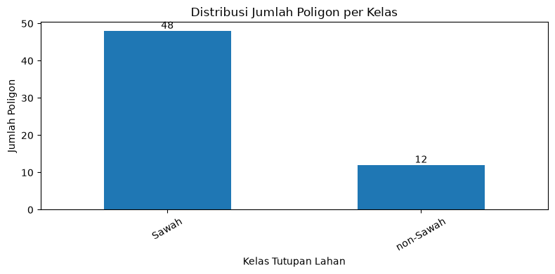
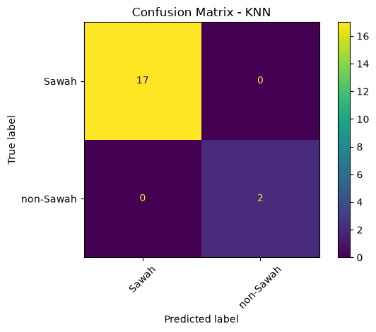

Pemetaan Penggunaan dan Tutupan Lahan (LULC) Jawa Timur#
Business Understanding#
Latar Belakang#
Permukaan Bumi memiliki beragam jenis tutupan lahan yang mencerminkan kondisi lingkungan dan aktivitas manusia. Provinsi Jawa Timur memiliki wilayah pertanian, permukiman, hutan, mangrove, serta perairan yang tersebar di berbagai daerah. Keberagaman tersebut menjadikan pemetaan tutupan lahan (Land Use and Land Cover / LULC) penting untuk memahami kondisi wilayah dan mendukung perencanaan tata ruang serta kebijakan pengelolaan lingkungan.
Melalui citra satelit Sentinel-2 Level-2A, berbagai objek permukaan Bumi dapat dikenali berdasarkan karakteristik pantulan spektralnya. Dengan memanfaatkan Sistem Informasi Geografis (SIG) dan algoritma Machine Learning, khususnya Random Forest, proses klasifikasi dapat dilakukan secara sistematis untuk membedakan enam kelas tutupan lahan, yaitu Sawah, Bangunan, Hutan (Lahan Hijau), Mangrove, Laut (Perairan Terbuka), dan Danau (Ranu).
Tujuan Analisis#
Melakukan Klasifikasi Tutupan Lahan: Mengidentifikasi enam kelas tutupan lahan di wilayah Jawa Timur berdasarkan fitur spektral Sentinel-2 menggunakan algoritma Machine Learning, serta mengevaluasi hasil klasifikasi melalui data training, testing, dan metrik akurasi.
Menyajikan Informasi Spasial: Memvisualisasikan hasil klasifikasi dalam bentuk peta interaktif menggunakan Folium/Leaflet dengan latar citra satelit, serta mengembangkan aplikasi berbasis Streamlit dan dokumentasi melalui Jupyter Book.
Hasil analisis ini diharapkan dapat memberikan gambaran mengenai persebaran tutupan lahan pada wilayah yang diteliti serta menjadi informasi pendukung dalam memahami pemanfaatan ruang, pengelolaan lingkungan, dan perencanaan kebijakan tata ruang di Jawa Timur.
Data Understanding#
Deskripsi Dataset dan Label Kelas#
Eksperimen ini menggunakan total 300 data titik sampel koordinat. Penentuan kelas Klasifikasi Penutup Lahan yang telah disesuaikan dengan lanskap Jawa Timur:
Label |
Kelas |
Deskripsi |
|---|---|---|
1 |
Sawah |
Area pertanian yang digunakan untuk budidaya padi. |
2 |
Bangunan |
Kawasan terbangun seperti permukiman, gedung, jalan, dan fasilitas lainnya. |
3 |
Hutan |
Wilayah dengan vegetasi rapat seperti hutan dan kawasan hijau dengan tutupan pohon dominan. |
4 |
Mangrove |
Vegetasi mangrove yang berada di kawasan pesisir dan daerah pasang surut. |
5 |
Danau |
Badan air tawar seperti danau, waduk, telaga, atau bendungan. |
6 |
Laut |
Perairan laut terbuka yang berada di wilayah pesisir Jawa Timur. |
Ekstraksi Fitur#
Band Spektral Sentinel-2A: Citra satelit bersumber dari sensor Multispectral Instrument (MSI) pada wahana Sentinel-2A Level-2A (Copernicus Data Space Ecosystem - CDSE) dengan koreksi atmosfer Bottom-of-Atmosphere (BOA):
B02 (Blue - 490 nm): Resolusi 10 meter. Berguna untuk mendeteksi badan air jernih dan hamburan partikel atmosfer.
B03 (Green - 560 nm): Resolusi 10 meter. Puncak pantulan klorofil daun pada spektrum tampak dan deteksi sedimen perairan.
B04 (Red - 665 nm): Resolusi 10 meter. Pita serapan utama klorofil; pembeda tajam antara vegetasi hidup dan material tanah terbuka/bangunan.
B08 (Near Infrared / NIR - 842 nm): Resolusi 10 meter. Pantulan sangat tinggi dari struktur sel mesofil daun; diserap hampir total oleh air jernih.
B11 (Short-Wave Infrared / SWIR - 1610 nm): Resolusi 20 meter (di-resample ke 10 m). Sensitif terhadap kelembapan air pada tanah dan vegetasi, serta reflektansi material atap/beton.
Indeks Transformasi (Rumus Spektral):
Untuk mempermudah algoritma dalam mengenali pola, fitur spektral dasar dikalkulasikan ke dalam dua metrik indeks matematis:
NDVI (Normalized Difference Vegetation Index) Mengukur tingkat kehijauan, kerapatan, dan kesehatan vegetasi.
Rumus:
\[NDVI = \frac{B08 - B04}{B08 + B04}\]NDWI (Normalized Difference Water Index) Mendeteksi fitur kebasahan dan badan air secara tegas, sembari meminimalisir efek pantulan dari tanah maupun vegetasi terrestrial.
Rumus:
\[NDWI = \frac{B03 - B08}{B03 + B08}\]
Data Collection#
Import Library#
from pathlib import Path
import numpy as np
import pandas as pd
import geopandas as gpd
import rasterio
import openeo
import folium
import matplotlib.pyplot as plt
import joblib
from shapely.validation import make_valid
from rasterio.mask import mask as rio_mask
from sklearn.model_selection import train_test_split
from sklearn.preprocessing import StandardScaler
from sklearn.neighbors import KNeighborsClassifier
from sklearn.metrics import (
accuracy_score,
f1_score,
classification_report,
ConfusionMatrixDisplay
)
---------------------------------------------------------------------------
ImportError Traceback (most recent call last)
Cell In[1], line 9
7 import openeo
8 import folium
----> 9 import matplotlib.pyplot as plt
10 import joblib
12 from shapely.validation import make_valid
File ~\AppData\Local\Programs\Python\Python312\Lib\site-packages\matplotlib\pyplot.py:73
70 from matplotlib import _docstring
71 from matplotlib.backend_bases import (
72 FigureCanvasBase, FigureManagerBase, MouseButton)
---> 73 from matplotlib.figure import Figure, FigureBase, figaspect
74 from matplotlib.gridspec import GridSpec, SubplotSpec
75 from matplotlib import rcsetup, rcParamsDefault, rcParamsOrig
File ~\AppData\Local\Programs\Python\Python312\Lib\site-packages\matplotlib\figure.py:40
37 import numpy as np
39 import matplotlib as mpl
---> 40 from matplotlib import _blocking_input, backend_bases, _docstring, projections
41 from matplotlib.artist import (
42 Artist, allow_rasterization, _finalize_rasterization)
43 from matplotlib.backend_bases import (
44 DrawEvent, FigureCanvasBase, NonGuiException, MouseButton, _get_renderer)
File ~\AppData\Local\Programs\Python\Python312\Lib\site-packages\matplotlib\projections\__init__.py:55
1 """
2 Non-separable transforms that map from data space to screen space.
3
(...)
52 `matplotlib.projections.polar` may also be of interest.
53 """
---> 55 from .. import _api, axes, _docstring
56 from .geo import AitoffAxes, HammerAxes, LambertAxes, MollweideAxes
57 from .polar import PolarAxes
File ~\AppData\Local\Programs\Python\Python312\Lib\site-packages\matplotlib\axes\__init__.py:1
----> 1 from . import _base
2 from ._axes import Axes
4 # Backcompat.
File ~\AppData\Local\Programs\Python\Python312\Lib\site-packages\matplotlib\axes\_base.py:28
26 from matplotlib.rcsetup import cycler, validate_axisbelow
27 import matplotlib.spines as mspines
---> 28 import matplotlib.table as mtable
29 import matplotlib.text as mtext
30 import matplotlib.ticker as mticker
File ~\AppData\Local\Programs\Python\Python312\Lib\site-packages\matplotlib\table.py:36
33 from .transforms import Bbox
34 from .path import Path
---> 36 from .cbook import _is_pandas_dataframe
39 class Cell(Rectangle):
40 """
41 A cell is a `.Rectangle` with some associated `.Text`.
42
(...)
45 `.Table.add_cell`.
46 """
ImportError: cannot import name '_is_pandas_dataframe' from 'matplotlib.cbook' (C:\Users\Administrator\AppData\Local\Programs\Python\Python312\Lib\site-packages\matplotlib\cbook\__init__.py)
Membaca Polygon Ground Truth#
Data ground truth dari enam kelas tutupan lahan dibaca, diberi label, lalu digabungkan menjadi satu GeoDataFrame.
DATA = Path('C:\\project\\PSD\\data')
HASIL = Path('C:\\project\\PSD\\hasil\\dataset')
HASIL.mkdir(exist_ok=True)
SUMBER = {
'Sawah': DATA / '50_sawah.zip',
'non-Sawah': DATA / '50_nonsawah.zip',
}
LABEL = {
'Sawah': 1,
'non-Sawah': 2,
}
bagian = []
for kelas, file in SUMBER.items():
g = gpd.read_file(f'zip://{file.as_posix()}').to_crs('EPSG:4326')
g = g[g.geometry.notna() & ~g.geometry.is_empty].copy()
g['geometry'] = g.geometry.apply(lambda x: x if x.is_valid else make_valid(x))
g['label_teks'] = kelas
g['label'] = LABEL[kelas]
g['poligon_id'] = [f'{kelas}_{i:04d}' for i in range(len(g))]
bagian.append(g[['poligon_id', 'label', 'label_teks', 'geometry']])
gdf = gpd.GeoDataFrame(
pd.concat(bagian, ignore_index=True),
crs='EPSG:4326'
)
print('Total polygon:', len(gdf))
print(gdf['label_teks'].value_counts())
Total polygon: 100
label_teks
Sawah 50
non-Sawah 50
Name: count, dtype: int64
Akuisisi Citra Sentinel-2 dengan openEO#
Citra Sentinel-2 Level-2A diperoleh melalui openEO Copernicus berdasarkan wilayah dan periode pengamatan. Data diproses dengan penyaringan awan dan komposit median, kemudian diunduh dalam format GeoTIFF (.tif) untuk klasifikasi tutupan lahan.
minx, miny, maxx, maxy = gdf.total_bounds
bbox = {
'west': float(minx),
'south': float(miny),
'east': float(maxx),
'north': float(maxy),
'crs': 'EPSG:4326'
}
connection = openeo.connect('https://openeo.dataspace.copernicus.eu')
connection.authenticate_oidc()
cube = connection.load_collection(
'SENTINEL2_L2A',
spatial_extent=bbox,
temporal_extent=['2026-01-01', '2026-01-30'],
bands=['B02', 'B03', 'B04', 'B08', 'B11', 'SCL'],
max_cloud_cover=30
)
scl = cube.band('SCL')
mask_awan = (scl == 1) | (scl == 3) | (scl == 8) | (scl == 9) | (scl == 10)
cube = cube.filter_bands(['B02', 'B03', 'B04', 'B08', 'B11']).mask(mask_awan)
cube = cube.median_time()
cube = cube.resample_spatial(resolution=0.0002, projection=4326)
cube = cube.save_result(format='GTiff')
job = cube.execute_batch(title='UTS_Sentinel2_KNN')
job.get_results().download_file('hasil_citra_klasifikasi.tif')
Ekstraksi Piksel dari Polygon#
Setiap piksel Sentinel-2 yang berada di dalam polygon menjadi satu baris dataset. Maksimal 1000 piksel per polygon digunakan agar polygon yang sangat luas tidak mendominasi dataset.
FILE_TIF = 'C:\project\PSD\hasil_citra_klasifikasi.tif'
BANDS = ['B02', 'B03', 'B04', 'B08', 'B11']
rng = np.random.default_rng(42)
potongan = []
with rasterio.open(FILE_TIF) as src:
gdf_raster = gdf.to_crs(src.crs)
for _, row in gdf_raster.iterrows():
try:
arr, transform = rio_mask(
src,
[row.geometry],
crop=True,
filled=False
)
except ValueError:
continue
data = np.ma.getdata(arr[:5]).astype(float)
masker = np.ma.getmaskarray(arr[:5]).any(axis=0)
valid = (
~masker &
np.isfinite(data).all(axis=0) &
(data > 0).all(axis=0)
)
r, c = np.nonzero(valid)
if len(r) == 0:
continue
if len(r) > 1000:
pilih = rng.choice(len(r), 1000, replace=False)
r = r[pilih]
c = c[pilih]
nilai = data[:, r, c].T
xs, ys = rasterio.transform.xy(transform, r, c)
temp = pd.DataFrame(nilai, columns=BANDS)
temp['poligon_id'] = row['poligon_id']
temp['label'] = row['label']
temp['label_teks'] = row['label_teks']
temp['lon'] = np.asarray(xs)
temp['lat'] = np.asarray(ys)
potongan.append(temp)
df = pd.concat(potongan, ignore_index=True)
print('Jumlah piksel hasil ekstraksi:', len(df))
<>:1: SyntaxWarning: invalid escape sequence '\p'
<>:1: SyntaxWarning: invalid escape sequence '\p'
C:\Users\Administrator\AppData\Local\Temp\ipykernel_14244\3823425408.py:1: SyntaxWarning: invalid escape sequence '\p'
FILE_TIF = 'C:\project\PSD\hasil_citra_klasifikasi.tif'
Jumlah piksel hasil ekstraksi: 95
Menghitung Indeks Spektral dan Membuat dataset.csv#
Indeks spektral adalah nilai yang digunakan untuk membedakan jenis permukaan bumi berdasarkan pantulan cahaya satelit. NDVI menunjukkan tingkat kehijauan tanaman, NDWI dan MNDWI membantu mengenali perairan, sedangkan NDBI membantu mendeteksi kawasan bangunan. dataset.csv merupakan tabel yang menyimpan nilai-nilai tersebut beserta kelas lahannya untuk digunakan dalam klasifikasi.
e = 1e-9
df['NDVI'] = (df['B08'] - df['B04']) / (df['B08'] + df['B04'] + e)
df['NDWI'] = (df['B03'] - df['B08']) / (df['B03'] + df['B08'] + e)
df['MNDWI'] = (df['B03'] - df['B11']) / (df['B03'] + df['B11'] + e)
df['NDBI'] = (df['B11'] - df['B08']) / (df['B11'] + df['B08'] + e)
df = df.replace([np.inf, -np.inf], np.nan).dropna()
df.to_csv(HASIL / 'dataset.csv', index=False)
print('dataset.csv berhasil dibuat')
dataset.csv berhasil dibuat
Karakteristik Dataset Ground Truth#
print(f'Jumlah baris (piksel): {df.shape[0]:,}')
print(f'Jumlah kolom : {df.shape[1]}')
print(f'Jumlah polygon : {df["poligon_id"].nunique():,}')
print(f'Jumlah kelas : {df["label_teks"].nunique()}')
df.head()
Jumlah baris (piksel): 95
Jumlah kolom : 14
Jumlah polygon : 60
Jumlah kelas : 2
| B02 | B03 | B04 | B08 | B11 | poligon_id | label | label_teks | lon | lat | NDVI | NDWI | MNDWI | NDBI | |
|---|---|---|---|---|---|---|---|---|---|---|---|---|---|---|
| 0 | 470.0 | 748.0 | 563.0 | 2890.0 | 1786.0 | Sawah_0000 | 1 | Sawah | 112.715289 | -7.140258 | 0.673907 | -0.588785 | -0.409629 | -0.236099 |
| 1 | 539.0 | 936.0 | 773.0 | 3865.0 | 2421.0 | Sawah_0001 | 1 | Sawah | 112.718289 | -7.142858 | 0.666667 | -0.610081 | -0.442359 | -0.229717 |
| 2 | 541.0 | 867.0 | 757.0 | 3569.0 | 2404.0 | Sawah_0001 | 1 | Sawah | 112.718289 | -7.143058 | 0.650023 | -0.609107 | -0.469887 | -0.195044 |
| 3 | 581.0 | 916.0 | 792.0 | 3652.0 | 2509.0 | Sawah_0001 | 1 | Sawah | 112.718489 | -7.143058 | 0.643564 | -0.598949 | -0.465109 | -0.185522 |
| 4 | 564.0 | 957.0 | 800.0 | 3681.0 | 2500.0 | Sawah_0002 | 1 | Sawah | 112.718089 | -7.142858 | 0.642937 | -0.587322 | -0.446341 | -0.191069 |
Data Preprocessing#
Distribusi Jumlah per Kelas#
Distribusi jumlah piksel per kelas menunjukkan banyaknya data piksel pada setiap jenis tutupan lahan, seperti sawah, bangunan, hutan, mangrove, dan perairan. Distribusi ini digunakan untuk melihat apakah jumlah data setiap kelas seimbang atau tidak.
# Menghitung jumlah poligon unik per kelas
jumlah_poligon = df.groupby('label_teks')['poligon_id'].nunique()
# Visualisasi
ax = jumlah_poligon.plot(kind='bar', figsize=(8, 4))
plt.title('Distribusi Jumlah Poligon per Kelas')
plt.xlabel('Kelas Tutupan Lahan')
plt.ylabel('Jumlah Poligon')
plt.xticks(rotation=30)
# Menampilkan angka di atas batang
for i, nilai in enumerate(jumlah_poligon):
ax.text(i, nilai, str(nilai), ha='center', va='bottom')
plt.tight_layout()
plt.show()
print(jumlah_poligon)
print("Total poligon:", jumlah_poligon.sum())

label_teks
Sawah 48
non-Sawah 12
Name: poligon_id, dtype: int64
Total poligon: 60
Penentuan Fitur#
Penentuan fitur adalah pemilihan variabel yang digunakan model untuk mengenali jenis tutupan lahan. Fitur yang digunakan terdiri dari 5 band Sentinel-2 dan 4 indeks spektral, sehingga terdapat 9 fitur sebagai dasar klasifikasi.
fitur = [
'B02', 'B03', 'B04', 'B08', 'B11',
'NDVI', 'NDWI', 'MNDWI', 'NDBI'
]
X = df[fitur]
y = df['label_teks']
Pembagian Data Training dan Testing 80:20#
Pembagian data 80:20 adalah proses membagi dataset menjadi 80% data training untuk melatih model mengenali pola tutupan lahan dan 20% data testing untuk mengukur kemampuan model dalam mengklasifikasikan data yang belum pernah dipelajari.
X_train, X_test, y_train, y_test = train_test_split(
X,
y,
test_size=0.20,
random_state=42,
stratify=y
)
print('Data training:', len(X_train))
print('Data testing :', len(X_test))
Data training: 76
Data testing : 19
StandardScaler#
StandardScaler adalah metode untuk menyamakan skala nilai setiap fitur agar memiliki rata-rata 0 dan standar deviasi 1. Tujuannya supaya fitur dengan nilai besar tidak mendominasi perhitungan jarak pada algoritma KNN.
scaler = StandardScaler()
X_train_scaled = scaler.fit_transform(X_train)
X_test_scaled = scaler.transform(X_test)
Modeling#
Modeling adalah tahap membangun dan melatih model K-Nearest Neighbors (KNN) menggunakan data training. KNN mengklasifikasikan tutupan lahan berdasarkan kemiripan fitur dengan sejumlah data terdekat.
knn_model = KNeighborsClassifier(n_neighbors=5)
knn_model.fit(X_train_scaled, y_train)
y_pred_knn = knn_model.predict(X_test_scaled)
Evaluation#
Accuracy dan F1-Score#
Accuracy adalah ukuran persentase prediksi model yang benar dari seluruh data uji. Sementara itu, F1-Score adalah ukuran keseimbangan antara precision (ketepatan prediksi) dan recall (kemampuan mengenali kelas), terutama saat jumlah data setiap kelas tidak seimbang.
accuracy = accuracy_score(y_test, y_pred_knn)
f1_macro = f1_score(y_test, y_pred_knn, average='macro')
f1_weighted = f1_score(y_test, y_pred_knn, average='weighted')
print(f'Accuracy : {accuracy:.4f}')
print(f'F1 Macro : {f1_macro:.4f}')
print(f'F1 Weighted: {f1_weighted:.4f}')
Accuracy : 1.0000
F1 Macro : 1.0000
F1 Weighted: 1.0000
Classification Report#
print(classification_report(y_test, y_pred_knn))
precision recall f1-score support
Sawah 1.00 1.00 1.00 17
non-Sawah 1.00 1.00 1.00 2
accuracy 1.00 19
macro avg 1.00 1.00 1.00 19
weighted avg 1.00 1.00 1.00 19
Confusion Matrix#
ConfusionMatrixDisplay.from_predictions(
y_test,
y_pred_knn,
xticks_rotation=45
)
plt.title('Confusion Matrix - KNN')
plt.tight_layout()
plt.show()

Evaluasi Tingkat Polygon#
Prediksi piksel pada data uji dikelompokkan berdasarkan poligon_id. Kelas akhir setiap polygon ditentukan menggunakan mayoritas prediksi piksel.
hasil_test = df.loc[
X_test.index,
['poligon_id', 'label_teks']
].copy()
hasil_test['prediksi'] = y_pred_knn
eval_poligon = (
hasil_test
.groupby('poligon_id')
.agg(
kelas_aktual=('label_teks', 'first'),
kelas_prediksi=('prediksi', lambda x: x.mode().iloc[0]),
jumlah_piksel=('prediksi', 'size')
)
.reset_index()
)
eval_poligon['benar'] = (
eval_poligon['kelas_aktual'] ==
eval_poligon['kelas_prediksi']
)
print('Total polygon uji:', len(eval_poligon))
print('Polygon benar :', int(eval_poligon['benar'].sum()))
print('Polygon salah :', int((~eval_poligon['benar']).sum()))
print('Akurasi polygon :', round(eval_poligon['benar'].mean(), 4))
Total polygon uji: 16
Polygon benar : 16
Polygon salah : 0
Akurasi polygon : 1.0
Peta Interaktif Evaluasi Polygon#
gdf_eval = gdf.merge(
eval_poligon,
on='poligon_id',
how='left'
)
WARNA_KELAS = {
'Sawah': '#90EE90',
'non-Sawah': '#FF0000',
}
minx, miny, maxx, maxy = gdf_eval.total_bounds
m = folium.Map(
location=[(miny + maxy) / 2, (minx + maxx) / 2],
zoom_start=8,
tiles=None
)
folium.TileLayer(
tiles='https://server.arcgisonline.com/ArcGIS/rest/services/World_Imagery/MapServer/tile/{z}/{y}/{x}',
attr='Esri World Imagery',
name='Esri Satellite',
overlay=False
).add_to(m)
folium.TileLayer('OpenStreetMap', name='OpenStreetMap').add_to(m)
for kelas, warna in WARNA_KELAS.items():
sub = gdf_eval[gdf_eval['label_teks'] == kelas]
folium.GeoJson(
sub,
name=kelas,
style_function=lambda feature, warna=warna: {
'color': warna,
'fillColor': warna,
'weight': 2,
'fillOpacity': 0.45
},
tooltip=folium.GeoJsonTooltip(
fields=['poligon_id', 'label_teks', 'kelas_prediksi', 'benar'],
aliases=['Polygon:', 'Kelas Asli:', 'Prediksi:', 'Benar:']
)
).add_to(m)
salah = gdf_eval[gdf_eval['benar'] == False]
if len(salah) > 0:
folium.GeoJson(
salah,
name='Salah Klasifikasi',
style_function=lambda feature: {
'color': '#ff7800',
'weight': 4,
'fill': False,
'dashArray': '6, 4'
}
).add_to(m)
folium.LayerControl(collapsed=False).add_to(m)
m.fit_bounds([[miny, minx], [maxy, maxx]])
m.save(HASIL / 'peta_evaluasi_knn.html')
m